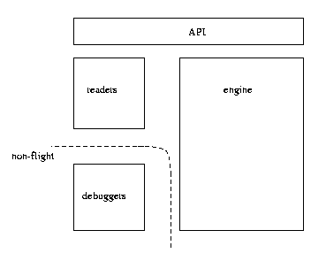
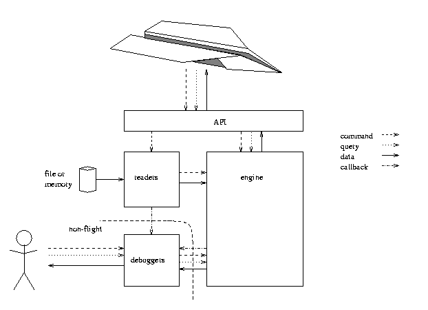
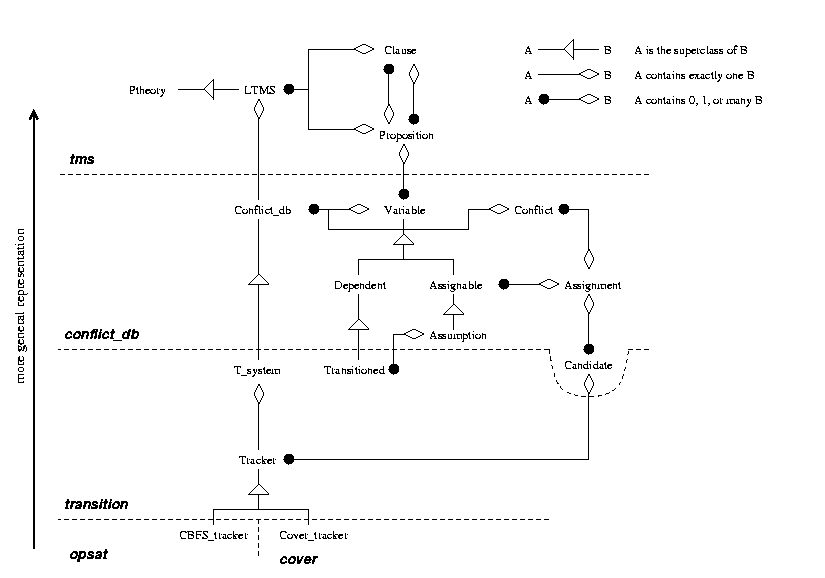
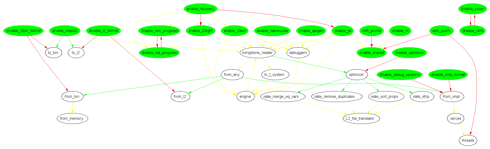

This file documents Livingstone v2.5 ; this is the July 27, 2001 edition of the manual.
If you're looking for a user manual (or for acknowledgments), see the L2 user manual. Benoit Hudson wrote this manual largely as a document to help out later developers like Lee Brownston who was taking over from him. It contains many of my personal opinions. Keep in mind that this manual is free. Free advice is worth every penny.
I took the overarching principle in the design of L2 from Stroustrup (Stroustrup 1994: The Design and Evolution of C++): "you only pay for what you use." The metric for cost is in terms of any kind of performance: CPU time, memory, compiled code size, and even compile time.
This is mostly controlled by the configuration system
(see Configuration); when running configure, the user
specifies what features L2 should include in this compiled instance. Any
files, or parts of files, not needed for the selected set of features,
should not be compiled; any data structures not used should not even be
available. Perhaps departing from Stroustrup's ideals, L2 uses a
combination of Makefile trickery and preprocessor defines to achieve this
goal.
To easily handle this, the design of L2 must be quite modular
(see Software components). The readers need not have the engine around
to be useful (indeed, xmpl2l2 doesn't require the engine).
Although the API assumes the readers are available, this isn't fundamental:
nowhere else in the engine is that assumption made. The debuggers are more
intrusive and require the readers and engine, but they impose little cost
on either if not enabled (it's in the TODO list to make the cost be zero).
X-37 pushed me to take this philosophy to a bit of an extreme. In several class in the reader, for instance, I have destructors defined as virtual if at configure-time the user allows debugging information in the model files, and non-virtual otherwise, since I know that the class will only have a subclass if we have debugging information. This saves some on code size, and in avoiding the need for a virtual function table for the class, but not very much at all; it hardly saves anything at all on CPU time. But I wrote that code at a time when it seemed doubtful we could fit everything within our stringent performance requirements. This is a warning that the tradeoff should be calculated more carefully in the future.
Code that is meant to be flown on an autonomous system is termed `flight code' (since, this being NASA, we think of putting L2 on spacecraft) and has extra requirements placed on it as compared with the rest of the codebase - something akin to the difference between kosher and pareve foods. In general, all features of the engine should be made flyable. At least one path through the readers should also be flyable. Any other code (debuggers, skunkworks, etc) needn't fly.
Flight code must not:
In addition, other projects (like X-37) may have extra requirements. These should be added to the main L2 branch only if either (a) they actually ward away potential bugs or (b) many projects have the requirement. They should not be merged into the main branch if they reduce code legibility, significantly affect performance, or reduce the ability to easily change the implementation (here I'm thinking mainly of iterators).
Given limited development time, L2 developers should spend the bulk of their time making the flight code perfect, and only a small amount cleaning up the debuggers in particular, and other non-flight code in general. That said, the debuggers are used for model development, so that if users complain of sluggish behaviour which is traced to the debuggers, that should be fixed. But only enough that model developers stop complaining.
A note about the l2flight front-end. Clearly, this is not flight
code; however, it should be treated as if it were with the exception that
file (and terminal) access is ok. The goal of this executable is to test
the API as changes are made to it or as it is ported to new platforms; and
to size L2 in terms of code size, memory usage, and CPU time. It is also a
good target for profiling, since it does not include the debuggers which
historically have shifted the execution costs quite dramatically.
The current standard for naming conventions is mix-and-match, mostly taken from the table below. Often they are consistent within a file, but not always. This reflects the fact that several developers have put their paws in the pot without a coherent naming convention having been imposed beforehand. My personal preference is the one marked with a pound sign (#), two if I feel strongly about it.
| class name | Class_name | ClassName# | pfx_class_name
|
| function name | fn_name | fnName # |
|
| instance variables | i_var | iVar | iVar_## (note 1)
|
| args (reference) | T<space>& | T&<space># |
|
| args (pointer) | T<space>*# | T*<space> |
|
| args (const) | const T *# | T const * | (note 2)
|
| accessors | get_X()# | x() | (note 3)
|
| predicate | is_p()## | p() | (note 4)
|
| iterator type | x_iterator# | iterator | (note 5)
|
| iterator function | begin_X()## | X_begin() | begin() (note 5)
|
Note 1. I find this makes it much clearer whether something it an argument
or local variable, or whether it's an instance variable. It also clears up
the name iVar for the accessor function that returns iVar_,
but see note 3.
Note 2. With multiple const and pointer specifications, I prefer the
second form as being somewhat more parallel: T const* const* rather
than const T * const *.
Note 3. I don't care so much about this one; and certainly, I prefer
size() to get_size() since it's much shorter, and just as
clear. Many instances of the second form are my fault, I must admit.
Note 4. Typically, a predicate could be a verb: for instance,
empty() is a query "is the list empty" but could easily be
interpreted as a command "make the list empty."
Note 5. Iterator types and functions should have some version of the name
of what they're iterating over, except in the definition of an abstract
data type like Slist. Otherwise, it's confusing (what is being
iterated over), and non-extensible (can't easily add another list).
The L2 coding conventions are intented to allow a few things: safety, maintainability, "pay only for what you use," and ease of porting. As with naming conventions, the current code-base does not follow all of these rules, but it's moving in that direction.
The usual rules apply here. Most of what I have to add is to always check array bounds - never skip on the check! Note that I do consider checking against the end iterator of an array to be an array bounds check, as long as you only use forward iterators (it's far too easy to screw up using forward-and-back iterators).
The configure option --with-purify helps a lot to discover what's
going on. The code should have no errors at all, except if you fully
understand what the error is, why it's happening, and why it's a spurious
error.
Similarly, enable --with-Wall (the default) and
--with-Werror. This turns on all compiler warnings, and calls them
errors. Compiler warnings often reveal potential problems; don't allow any
of them. Currently, --with-Wall turns off warnings about
non-virtual destructors, and does not turn on the -W switch; this
should be fixed.
Use the C++ static_cast and const_cast instead of the C cast
syntax, and use these sparingly (especially const_cast which I'm
guilty of overusing). These are more restrictive than the C-style cast,
which should ward off some silly errors.
Finally, it is critically important to use the tab character meaning 8 spaces (or just don't use the tab character), and to indent to the tune of 4 characters. I wrote this in jest (and since I couldn't find a better place for it), but I actually have been stung by some bugs because I misinterpreted which scope I was in due to poorly done indenting.
It should be as easy as possible to make changes to the implementation to fix performance issues as they crop up. This section has a few random thoughts on how to achieve that.
Use the generic data structures in mba_utils: classes Slist,
Array, and Hash_table. BinaryHeap should probably be
moved to there as well (it's currently just in CBFS). This saves
development time (no need to reinvent the wheel in every class).
Also, use iterators as much as possible. These free the code from knowing what kind of data structure over which they iterate - instead, we just use operators ++, !=, and * to do all the work. It becomes very easy to substitute a hash table for a linked list, or an array, etc.
Use typedefs if you want to return an iterator to something so that the
client needn't know what kind of thing it's iterating over. For instance,
class Variable allows access to its propositions using
Variable::prop_iterator. Client code can then declare iterators as
such, and not need to worry about how class Variable stores its
propositions (in an Slist, Array, or other). In particular,
the client code need only be recompiled - not modified - if the
Variable class changes the storage class, as long as it updates the
typedef correctly, or even changes from a typedef to a class of the same
name.
Loops over a data structure should take the following form:
{
Variable::prop_iterator it = v.begin_props();
for( ; it != v.end_props() ; ++it) {
Proposition *p = *it;
/* code in here acts on p */
}
}
Open a new scope so that it falls out of scope after the loop. It
doesn't work to put it in the for initialization section,
since in older C++ compilers (VC6.0 and gcc-2.7.2) the scope extends to the
entire function.
Always use it for the loop iterator; uniformity makes it easier to
figure out what is going on. If you have nested loops, make the inner loop
a function in its own right. If you absolutely must have nested loops (and
I can't really see why), rename both loop iterators to something very
obvious.
Whenever practical, make it possible to disable everything related to any particular feature.
The best way to do this is to put all that in a file or directory of its
own, and have configure simply not include the file in the library (using
the NOLIB_FEATURE_DIRS and FEATURE_DIRS ; see the
configure.in file). This method tends to produce the cleanest code:
the fewest files are affected by the feature.
A distant second is to provide a preprocessor macro (using AC_DEFINE
in configure.in) and protect the code in ifdefs.
Most features use a hybrid of the two approaches.
Currently, there is no good way to add a feature that should be enabled by default if certain other components are enabled, but disabled if the user doesn't want it to be included. There's a partial solution for the readers, but it's not perfect. The code used to create the graph in the section on configuration (see Configuration) might be a starting point.
L2 is essentially structured like a GNU program, in large part because of the need to port to a large number of platforms. To that end, we are aware and follow some of the GNU coding standards. Obviously we ignore some of the advice about language choice (we use C++) and porting to non-Unix platforms (Unix doesn't run spacecraft).
L2 should run out of the box on the following platforms:
Hopefully, it should also work on other Unix and Unix-like platforms (irix or cygwin, for instance).
In addition, it should be easy (less than an hour) to make any given release work on the following:
In particular, it should compile on those platforms. The time should be
entirely spent on generating the gnu_conf.h file and setting up
projects in their development environments. The requirement to compile on
those means we need to work around bugs in those compilers, and we're
limited to the subset of C++ they recognize.
To achieve this goal, follow these rules of thumb:
<stdlib.h>, <stddef.h>,
<assert.h> and a few other similarly extremly standard files.
l2_update in the
FILES_TO_CHECK variable.
__attribute__ mechanism in gcc after 2.5,
or various pragmas for VC6.0.
All files needed to develop or use L2, Skunkworks, and Stanley are under CVS. That includes the source, the build system, non-standard software packages (a C++ CORBA implementation, for instance; and the Xerces XML parser), and documentation. It does not include a C/C++ compiler, or a Java Virtual Machine: these are assumed to be present on any reasonable system.
Some files require non-standard software packages to build them (for instance, configure or the HTML version of this manual) but are required for any build. Such files in general are included in the CVS repository and any distribution. The makefiles know how to generate them if necessary, so to work on them, the developer will have to ensure the tools are available. This allows people to use L2 without having all the tools needed to work on the implementation.
The CVS repository is at /home/cvs/ISG-Repository on the NASA Ames code IC Solaris 8 system.
The following modules are defined:
mba/cpp
l2-regress
support/xerces-unix-src
skunkworks
This documentation mostly talks about mba/cpp, which is organized as
follows:
.
doc
include
.h) files for L2.
src
.cpp) files for L2.
L2 has three major software components: 
In addition, three APIs are provided; one talks only to the readers, another to the readers and the engine, and a third to all three components.
Data flows as follows: 
The engine has four main levels. Each level has a set of classes that implement the functionality in that level. 
The four main engine data types:
The LTMS (logic-based truth maintenance system) is responsible for propagating values through the model de Kleer. At this level, we use a propositional theory: we have propositions (see class Proposition) which can be true or false ; and clauses (see class Clause) in CNF. The system is satisfied by satisfying all clauses ; a clause is satisfied when any of its literals is true (that is, a proposition that appears as literals is true, or one that appears negated is false). We use unit propagation, which is imcomplete but very fast (linear-time) and in practice adequate.
Clauses can be volatile or non-volatile. This is a nod to the fact that some clauses will be added once and only removed in truncation, while others - those that implement assignable variables (see class Assignable) - will change often. The propagation prefers to use non-volatile clauses to volatile ones, so that de-asserting a volatile clause will undo less of the inference.
The LTMS class inherits from Ptheory. This is intended to allow easily changing the propagation algorithms. However, the evolution of the classes means that this is no longer a practical proposition; most likely, the two should be melded for a slight improvement in all aspects (code clarity, code size, CPU time, memory usage).
The conflict database has a notion of variables and values; it translates from that view to the propositional view by having a proposition for each variable=value assignment. It name comes from the fact that it discovers and stores conflicts between assignments - in particular, it stores them as a list of assignments to variables marked as being assumed variables (see class Assumption).
Candidates are probably misplaced. These store the result of a diagnosis, and thus should be more closely affiliated with the Tracker (see class Tracker).
The Conflict_db stores several types of variables; they are related to each other through the common base class Variable which is sufficiently functional to be used in most places.
Note that the Variable class holds a datum, which can be used by higher-level data structures (and is in fact used by the T_system) to hold extra information with a variable. However, before starting to actually use this, we sullied the separation between the conflict_db level and the T_system level by adding time, previous, and next fields to the variables. The Conflict_db does not itself use these, and the variable merely keeps them up to date when variables are destroyed. These fields should be moved to the datum that the T_system attaches.
The T_system is the system that handles transitions across time. The class implements both the progress algorithm which moves time forward and the truncate algorithm which ensures we only store a constant-size time window.
The T_system also maps from the modeler's perspective on variable types to the conflict database's types. Commands and observables are mapped to assignable variables ; modes become transitioned variables ; everything else becomes dependent variables.
The Transitioned class implements the mechanism by which modes work.
Each component has a current mode variable, which is an instance of this
class. Historical mode variables are represented by instances of the
Dependent class. In addition to having a mode variable, each mode variable
has an assumption variable, which corresponds to whether the transition
was nominal or off-nominal; these are refered to as mode-transition
variables (see CBFS, see Cover).
The Tracker class is essentially a list of candidates. It also intercepts attempts to create new timesteps (with progress), and calls truncate if the history table is full.
The CBFS_tracker and Cover_tracker classes are subclasses of Tracker, and implement CBFS or conflict coverage search, respectively. Most likely, these could be melded in with Tracker, and the search methods separated out from the data structure.
The name 'readers' is a bit of a misnomer. The readers directory includes all of the following:
from_.
xlate_.
to_.
All three share an in-memory representation, L2_file, that is fairly
easy to manipulate. The goal is that we can share a single representation,
yet optimize for the code needed for flight. The ideal is to have a small
on-disk (or the flight equivalent thereof) representation, simple code to
read it into our in-memory representation, minimal memory overhead to store
it there, and simple code to put it into the representation the engine
expects.
Note that to minimize the amount of read-only storage, we need to trade off code size and model size: since the model size is on the same order of magnitude as the code to read it, it may not save space to have a much smaller storage mechanism that is more complicated to read - in particular, it does not seem to be wortwhile to use compression techniques like gzip.
The executable xmpl2l2 can translate from one format to another (although it can't write XMPL).
In the discussion that follows, only from_memory,
to_t_system, and the L2_file classes that are not prefixed
with dbg_ are flight code. The rest is ground-only.
Readers are the intermediary between some model representation, typically
on disk, and the L2_file representation. At the moment, four
classes are defined.
from_xmpl Reads a model in the XMPL format. This requires the Xerces XML parser to be linked in with the program.
from_l2 Reads a model in the L2 format. This is an ASCII file format, with support for debugging sections, and is largely analogous to what's used in flight.
from_bin
Reads a model in the l2bin format. In fact, it simply loads the file into
an array of char in memory, and calls from_memory.
from_memory Reads a model in the l2bin format that's already in memory. L2bin is a binary file format, similar but much smaller, faster to load, and smaller code size, than the ASCII l2 format. It was developed when we had a very large and slow executable; its advantages are less important now, but we may as well use it since we have it. This is flight code.
Translators can effect various changes on a model in the L2_file
internal representation, and create a new such model. These are not flight
code; the idiom is to translate the model as much as needed while on the
ground - where we can easily wait a weekend, or get a bigger computer -,
and then install the resulting file on the flight article. Thus, the
translators are not optimized for speed or code size, but rather for ease
of implementation (although in practice they only take seconds to run at
the moment).
The two main variables that determine L2's performance are the number of variables, and the number of components (or, equivalently, the number of mode variables). The number of values per variable and the number of clauses are just as important, but in every model I've seen, they average to 3 and 9 respectively.
None of these are flight code.
Merges variables that are equated to each other unconditionally. This optimization reduces the number of variables, though not the number of mode variables.
In a nutshell, it looks at all clauses that assert v1=v2. It then replaces v1 and v2 with one single variable which takes the name of one of the two. Wherever one of the variables are found in any proposition, it replaces it with the new variable. If either variable was some kind of special variable (mode, observation, or command), the new variable is of the same type.
Equated variables happen fairly rarely within a component (humans don't write them often); but occur whenever two components are connected (computers write them all the time). The optimization tends to halve the number of variables.
Also, the optimization is required by min-progress. Min-progress assumes that each modeTransition variable is directly affected by a command. This optimization seems to make that true, although this author (Benoit Hudson) isn't convinced that it is guaranteed to do so.
Remove duplicate clauses and tautologies - clauses that are obviously true no matter what (such as v1=v1). This optimization is run last, in order to allow the other translators to be sloppy about creating duplicates and tautologies.
Used by the to_l2 and to_l2bin classes to reorder the
propositions into the order they write them in the file: first positive
var=value propositions, then negative ones, followed by positive
var=var propositions, and finally negative ones. This is done to save
on storage space, but is required by the two file formats.
Removes all debugging information. In addition, given that enumerations no
longer store any naming information, replaces all enumerations of the same
size with a single one, and updates the variables to use that single
enumeration. For instance, if the model has a ModeType with values ok and
failed; and an observation with values of zero and non-zero,
xlate_strip replaces both with a single enumeration of size two.
This only saves on model storage space, and then only slightly (25 bytes on
one version of the X-37 model, out of about 9kb).
Writers are responsible for taking a model in the L2_file
representation and transfering it to another representation. That new
representation can be either a file, or the L2 engine; there may or may not
be a reader for it. There is no writer for the XMPL format.
Writes the model in the l2bin file format. The model must have its propositions appropriately sorted (see xlate_sort_props).
Writes the model into a format appropriate for the
graphviz graph
drawing program.
Writes the model in the L2 file format. The model must have its propositions appropriately sorted (see xlate_sort_props).
Writes the model into the L2 engine proper. After this operation, we are ready for operation. This is flight code.
L2_file is a class that represents a model in a way similar to how
it is represented in the file formats. It has arrays of each kind of item:
enumerations, variables, propositions, clauses, and transitions. Each kind
of item has one or several classes that represent it. They are all
prefixed with L2r ("L2 reader"). These are all flight code, as they
are needed to temporarily represent the much shorter
representation stored in the non-volatile memory.
Several also have a version with debugging info; those are again prefixed
with dbg_. The debugging information is unused by the L2 engine,
but is used by the debuggers, and makes reading the model files slightly
easier (but still difficult). These classes are non-flight and can be
disabled with the configure option --disable-debug-sections.
The classes also define operator<< and related functions to output
using the iostream mechanism. Those functions can be disabled with the
configure option --disable-verbose.
Represents the values that a variable can take. The standard version has just an ID and a count of the number of values. The debugging version adds the name of the enumeration, along with the names for each value.
Enumerations are also known as types, attribute types, or domains.
Represents the variable. The standard version has ID, a pointer to the
enumeration, initial value (-1 meaning it has no initial value), the "kind"
of variable (observation, command, mode, or other; we use kind so as to
distinguish from type, which is the enumeration), and the modes of the
variable (stored as an L2rMode) .
Initial value is de facto ignored unless the variable is a mode variable,
although that isn't enforced until we get to
to_t_system::createInitialState. The modes can only be accessed if
the variable is a mode variable, and it is enforced.
The debugging version adds the name of the variable.
L2rProposition, L2rPropVarValue, L2rPropVarVar
Represents an assignment of a variable to a value, or of a variable to
another variable. Class L2rProposition is an abstract superclass to
classes L2rPropVarValue (which represents the former) and
L2rPropVarVar (the latter). They are known as propositions because
the var=value ones map to propositions; but this is somewhat of a
misnomer, as the var=var ones map to a number of clauses.
Propositions may be positive or negative (rather than having the clause store them as positive or negative literals; this may well have been a bad choice).
There is no debugging version.
Represents a CNF clause. The clause stores a list of propositions (see
above) and is to be interpreted as a disjunction between those
propositions. At most one of those propositions can be an var=value
assignment, in which case the L2rClause maps to several clauses
in the LTMS. The clause also knows whether it is in the
'background' - i.e. always active (as opposed to being a guard clause of a
transition).
It was probably an error to have the clause store a list of propositions, rather than two lists, one of positive literals and the other of negated literals. However, it's probably not worth changing.
The debugging version stores the component which created the clause. This information was added a while back in response to a change-request, but this author (Benoit Hudson) never figured out how to keep it up to date. So it's largely wasted space.
Represents a transition from one mode to another. Stores a list of clauses, the mode variable of which it's a transition, the modes which are the endpoints of the transition edge (the origin is ignored if this is a failure transition), the rank of the failure (ignore if this isn't a failure transition), and whether it's a failure.
The debug version adds the name of the transition. The XMPL format has a slot for it, which is why it's here and in the l2 ascii format. It's ignored and there isn't currently a way for the user to see it.
Represents the transition diagram of a mode variable. Simply holds lists
of the nominal and failure transitions. It's here to make it easier to
move things that only apply to mode variables out of the instance variables
L2rVariable, and just have that class hold a single pointer for all
that information.
No debugging version.
Using configure, of course. More on this later...
The debuggers are non-flight code which help in model development and debugging. One main feature they include is a mapping from strings to the integer IDs and data structures used internally. They also provide much more visibility into the internal structure than is stricly necessary or safe, much as does a C++ debugger.
For lack of time, I won't go into great details here. Part of the reason is that much of configure should be rewritten in my opinion, in order to take a higher-level description of the interdependencies of the various options. A seed of an idea lies in the files used to generate this manual, in particular the image below.
In said image, green ovals are user-provided settings; white ovals are internal settings. These are all boolean values (at least, as far as the dependency graph is concerned). The configure script adds some files and/or macros to the build depending on the value of the settings.
Red arrows denote that if the source node of the edge is active, the destination node to must not be active (the source disallows the destination). Yellow edges denote the opposite: the destination node must be active if the source node is (the source requires the destination). Green edges denote that, unless some other reason forbids it, the destination node should be active (the source wants the destination, but does not require it).
For example, assume we enable l2test using
--enable-l2test, and disable the optimizer using
--disable-optimizer. l2test requires the
livingstone_reader (yellow edge), so it is in turn enabled. The
livingstone_reader would like the optimizer (green edge); however,
the option to disable the optimizer disallows it (red edge) so it is not
enabled.
The configure file currently tries to implement this by hand, but that is tedious and error-prone; it would be nice to have that fragment of configury be automatically generated from a file format that could also automatically generate this image, which is informative. 